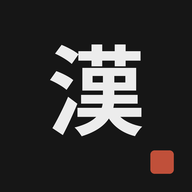

Se guarda automáticamente en este dispositivo después de cada tarjeta. No hace falta cuenta.
Un kanji está dominado cuando lo sabes tan bien que no vuelve hasta dentro de 3 semanas o más. Cada vez que aciertas, tarda más en volver (con Easy, el triple).
Kanji nuevos que te damos cada día en «Kanji de hoy».
Supera el reto de «Kanji de hoy» (todos los kanji del día con ✓) para sumar un día a tu racha. Si un día no lo superas, la racha vuelve a 0: las medallas que ya tienes se quedan, pero las nuevas se ganan con días seguidos contados desde 0 (con 1, 2, 4, 8 y 16 días, y después una cada 10 días: 20, 30, 40… hasta 100). Cada medalla trae su paleta, con su fondo y sus efectos. Toca una medalla para usar su paleta.
Úsalo para pasar tu progreso a otro móvil o navegador, o para guardarlo por si acaso.
Será tu reto diario. Puedes cambiarlo cuando quieras en Progreso.
Se abrirá a pantalla completa como una app más, funcionará sin conexión y podrá avisarte cada día.
Un aviso diario a la hora que elijas para hacer tus kanji del día. Si ese día ya los has hecho, no te molestamos.
Puedes cambiar la hora o desactivarlo cuando quieras en Progreso.